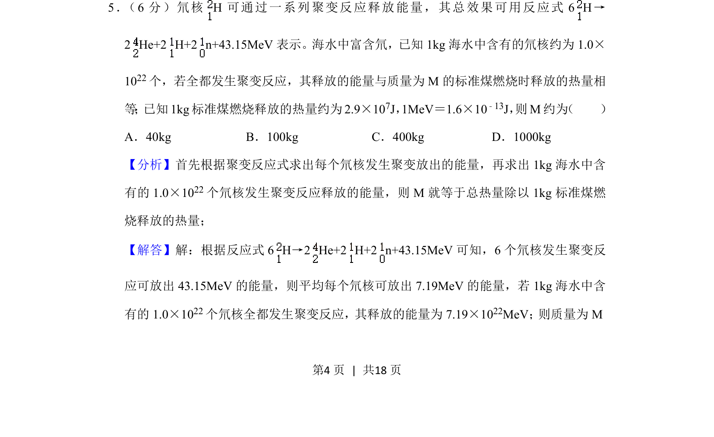
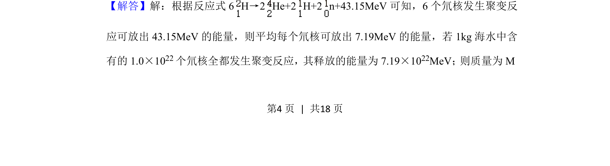
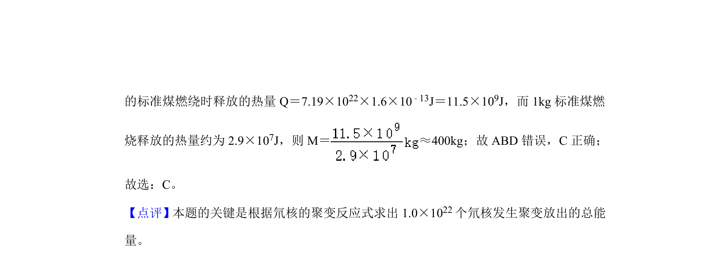

考点：核聚变 能量计算 单位换算 质能方程

计算海水氘核聚变释放能量与标准煤燃烧热量的等效质量。


📄 原 PDF 第 4 页：
素材/真题/吉林/2008-2024·（吉林）物理高考真题/2020年高考物理试卷（新课标Ⅱ）（解析卷）.pdf
5． （6分）氘核H可通过一系列聚变反应释放能量，其总效果可用反应式6 H→ 2 He+2 H+2 n+43.15MeV表示。海水中富含氘，已知1kg海水中含有的氘核约为1.0× 1022个，若全都发生聚变反应，其释放的能量与质量为M的标准煤燃烧时释放的热量相 等 ； 已知1kg标准煤燃烧释放的热量约为2.9×107J，1MeV＝1.6×10﹣13J， 则M约为 （ ） A．40kg B．100kg C．400kg D．1000kg
【分析】首先根据聚变反应式求出每个氘核发生聚变放出的能量，再求出1kg海水中含 有的1.0×10 22个氘核发生聚变反应释放的能量，则M就等于总热量除以1kg标准煤燃 烧释放的热量； 【解答】解：根据反应式6 H→2 He+2 H+2 n+43.15MeV可知，6个氘核发生聚变反 应可放出43.15MeV的能量，则平均每个氘核可放出7.19MeV的能量，若1kg海水中含 有的1.0×10 22个氘核全都发生聚变反应，其释放的能量为7.19×1022MeV； 则质量为M